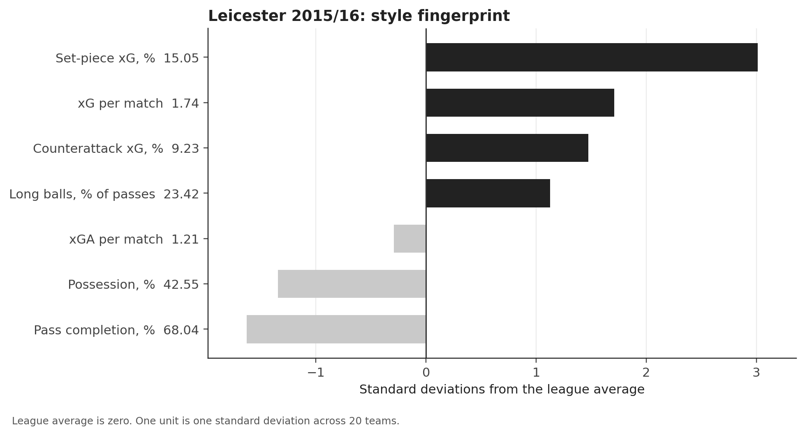
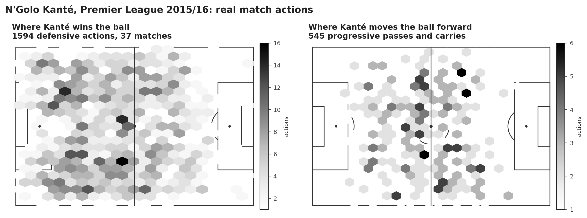
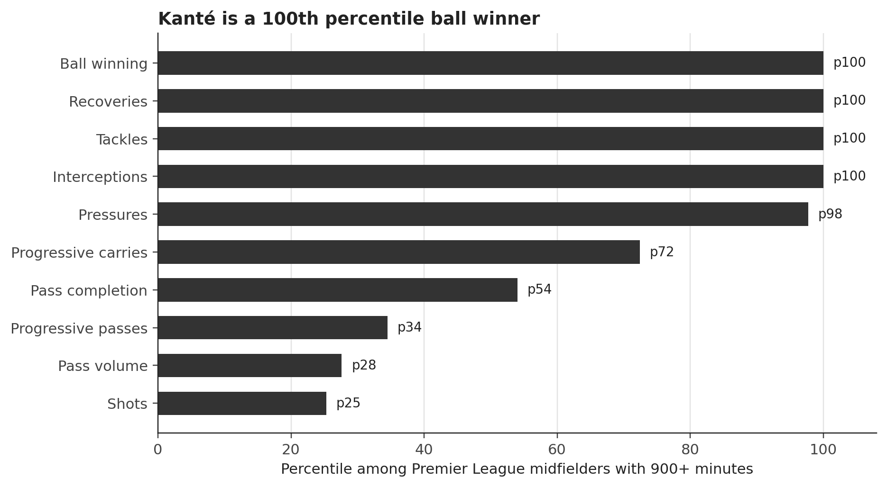
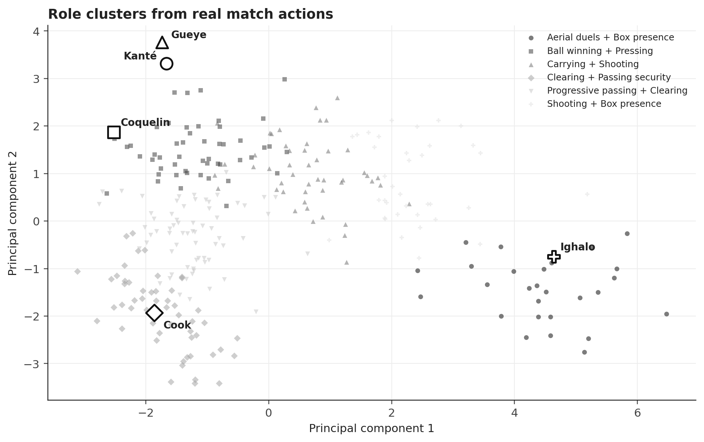
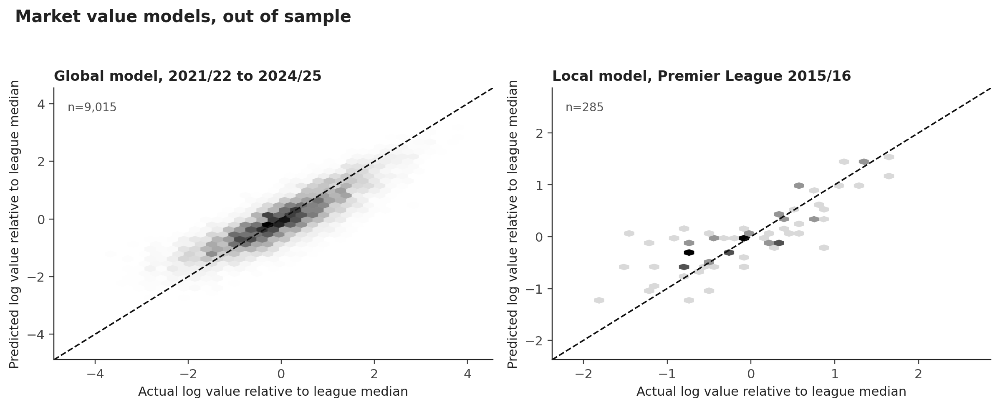
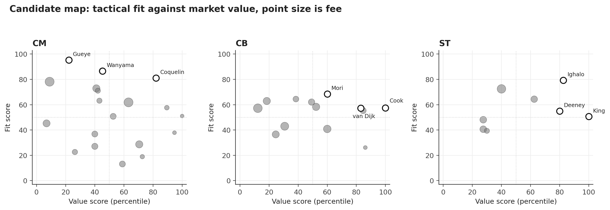
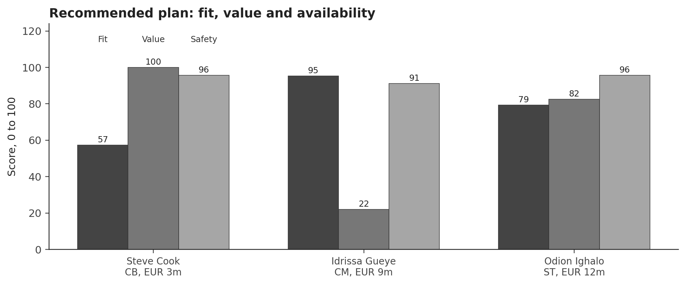

Leicester City won the Premier League in 2015/16 and lost N'Golo Kanté to Chelsea weeks later. The club had to replace a midfielder who was a 100th percentile ball winner, keep the counterattacking style and stay inside a limited budget. This report builds a transfer decision system from two independent data sources: StatsBomb event data for all 380 Premier League matches and a Transfermarkt datalake with market values, performances, transfers and injuries.
The recommended plan signs Idrissa Gueye from Aston Villa for EUR 9m, Steve Cook from AFC Bournemouth for EUR 3m and Odion Ighalo from Watford for EUR 12m. The three fees total EUR 24m and leave EUR 26m for wages, agent fees and a January buffer. Gueye is the closest real-match profile to Kanté (cosine similarity 0.93, 100th percentile ball winning). Cook is the strongest value signal in the candidate pool, with a local market gap of +61% and a global gap of +64% at a EUR 3m fee. Ighalo is the best available box threat, with 15 league goals and 16.9 xG in 2015/16.
The evidence is deliberately separated from the recommendation. The global market model reaches R2 0.734 and Spearman 0.855 on future seasons. The local model reaches R2 0.614 against 0.495 for a baseline that knows only age, minutes, role and club rank. Players flagged as undervalued in 2015/16 gained 11.8% in market value over the next two years, while the rest lost 10.9%. The hit rate was 52.8% against 35.8%. The signal is useful but modest, and the decision rule says so.
The plan is a portfolio, not a ranking. Kanté is unique and Gueye is fairly priced by the market, so the value model does not call him a bargain. The money is made on Cook, while Ighalo supplies a proven box threat at a modest fee. The report also shows what happened after 2016: Gueye and Cook gained value, Ighalo lost value, and the plan gained 52% in total. That is a backtest, not a promise, and it is used only to judge the method. The plan had two hits and one miss.
Leicester City finished the 2015/16 season with 81 points, 68 goals scored and 36 conceded. They won the league with 42.6% average possession, the lowest pass completion in the division and the highest xG per match. N'Golo Kanté played 37 of the 38 league matches and 3,019 minutes. He then joined Chelsea for a reported EUR 35.8m fee, against a market value of EUR 20m on 1 July 2016. The transfer was a sporting loss and a financial gain at the same time.
The decision is not simply to buy the player with the highest rating. Leicester needed a midfielder who could replace Kanté's defensive volume and carrying, a centre back who could succeed Robert Huth and Wes Morgan, and a forward who could compete with Jamie Vardy and Shinji Okazaki. The budget is EUR 50m in fees. Age, availability, injury history and tactical fit all matter. The sporting director has to choose three players, not rank a list.
The case is retrospective. The analysis uses only information available on 1 July 2016 for the recommendation. Market values from 2017 and 2018 are used only for validation and for the what happened next section. This avoids the usual trap of a 2026 scouting report that has no observable outcome.
The project combines event-level match data with market data. StatsBomb open data provides the 2015/16 Premier League season: 380 matches, 10,385 player-match rows and 548 players. Each match file contains every pass, carry, shot, pressure, tackle, interception, clearance and recovery with coordinates and pressure flags. Lineups provide formation slots and minutes.
The Transfermarkt datalake provides 92,671 player profiles, 901,429 market value observations, 1,878,719 player-season performance rows, 1,101,440 transfer records and injury histories. For the market model the analysis uses the top five leagues from 2010/11 to 2024/25, giving 30,939 player-seasons with a market value and at least five appearances. The case cutoff is 1 July 2016. Market values are in euros.
| Source | What it provides | Scale | Use |
|---|---|---|---|
| StatsBomb open data | Premier League 2015/16 events and lineups | 380 matches, 10,385 player-match rows, 548 players | Real match style, Kanté profile, local value model, candidate fit |
| Transfermarkt datalake | Profiles, market values, performances, transfers, injuries | 92,671 profiles, 901,429 values, 1.88m performance rows, 1.1m transfers | Global value model, case values, fees proxy, risk |
| Analysis cohort | Top five leagues, 2010/11 to 2024/25 | 30,939 player-seasons | Market model training and temporal validation |
The raw data is not committed to the repository because the event files alone are about 1.1 GB. The download script recreates it from public URLs, and the processed tables are committed so the app runs offline. Market value at the cutoff is the latest observation on or before 1 July 2016, with a maximum staleness of 550 days. Season end values use 1 July of the following year.
Player matching between StatsBomb and Transfermarkt uses normalized names, club mapping, position group and nationality, with rapidfuzz scores and manual checks. Of 421 StatsBomb players with at least 300 minutes, 408 are mapped. The 13 low-confidence matches are rejected rather than forced. All shortlisted players and the Leicester squad were checked by hand. The candidate pool requires at least 1,500 minutes, which excludes players whose per-90 rates are unstable.
Two data quality problems shaped the method. First, the Transfermarkt minutes column is unreliable for some high scorers: Harry Kane is listed with 135 minutes and 25 goals, Jamie Vardy with 131 minutes and 24 goals. The column behaves like minutes per goal in those rows. The local model therefore uses StatsBomb minutes, and the global model avoids minutes entirely and uses appearances and starts. Second, some 2015/16 profiles are missing from the datalake, including Charlie Daniels, Daryl Janmaat and Lee Cattermole. The matching keeps only verified players, and the report states that the candidate pool is a sample of the league, not a complete market.
| Check | Result | Action |
|---|---|---|
| StatsBomb matches | 380 of 380 | Full season used |
| Leicester matches | 38 | Club style and Kanté actions |
| StatsBomb players | 548 | 10,385 player-match rows |
| Mapped players | 408 of 421 with 300+ minutes | 13 low-confidence matches rejected |
| Candidate pool | 19 central midfielders, 13 centre backs, 8 centre forwards | 1,500+ minutes, age limit, EUR 1m to EUR 30m |
| Market cohort | 30,939 player-seasons | Top five leagues, 2010/11 to 2024/25 |
The style analysis uses the full season, not a highlight reel. Leicester had 42.6% possession against a league average of 50.0%, completed 68.0% of passes against 75.4%, and played 23.4% of passes long against 19.8%. They created 1.74 xG per match against a league average of 1.28 and conceded 1.21 against 1.28. Counterattacks produced 9.2% of their xG against 5.7% for the league, and set pieces produced 15.1% against 7.1%. This was a low-possession, direct, set-piece-heavy and counterattacking team.

The style matters for the replacement. A possession midfielder who needs the ball at his feet would change the team's shape. Leicester needed someone who could cover ground without the ball, win it back and carry it into space. The event data makes that requirement measurable.

Kanté's percentile ranks among Premier League midfielders with at least 900 minutes are extreme: 100th for ball winning, recoveries, tackles and interceptions, 98th for pressures, 72nd for progressive carries. He is not a high-volume passer: 44 passes per 90, 34th percentile for progressive passes and 54th for pass completion. The asymmetry is the point. Leicester did not need a deep-lying playmaker. They needed a destroyer who could also carry the ball.

A k-means clustering of all outfield players with 900+ minutes, using ball winning, pressing, progression, shooting, box presence, clearing and passing security, produces six readable roles. Kanté sits in the ball winning and pressing cluster. The cluster map is a descriptive check, not the decision model. It shows that the candidate pool contains players with genuinely different functions, and that a formation label alone is not enough.

| Need | Why | Required profile | Pool |
|---|---|---|---|
| Central midfield | Kanté leaves after 3,019 minutes | Elite ball winning, pressing, carries, Premier League readiness | 19 players |
| Centre back | Huth is 32 and Morgan is 32 | Clearances, blocks, aerial duels, enough passing to escape the block | 13 players |
| Centre forward | Vardy is 29 and Okazaki is 30 | Box threat, shots, xG, pressing, affordable fee | 8 players |
The midfield fit score is built in two steps. First, ten per-90 metrics for each midfielder are standardized within the candidate pool: ball winning, pressures, progressive passes, progressive carries, pass completion, recoveries, tackles, interceptions, xG and shots. The cosine similarity between a candidate and Kanté is computed on that vector. Second, the similarity is combined with minutes and pass completion: 75% similarity, 15% minutes and 10% pass completion. The weights are explicit and can be changed in the app.
Gueye is the closest match at 0.93 cosine. Jan Kirchhoff is second at 0.75, Victor Wanyama third at 0.70 and Francis Coquelin fourth at 0.68. Aaron Ramsey, listed by the data as a left defensive midfielder, has a similarity of about zero. That is a useful warning: formation labels are not roles. Ramsey is a box-to-box and attacking midfielder, not a Kanté replacement, and the similarity score captures it.
| Need | Player | Club | Age | Fee | Fit | Value | Safety | Score | Role cluster |
|---|---|---|---|---|---|---|---|---|---|
| CM | Francis Coquelin | Arsenal FC | 25.1 | EUR 12.0m | 81 | 82 | 74 | 80 | Ball winning + Pressing |
| CM | Idrissa Gueye | Aston Villa | 26.8 | EUR 9.0m | 95 | 22 | 91 | 76 | Ball winning + Pressing |
| CM | Victor Wanyama | Southampton FC | 25.0 | EUR 15.0m | 87 | 45 | 84 | 76 | Ball winning + Pressing |
| CM | Oriol Romeu Vidal | Southampton FC | 24.8 | EUR 5.0m | 58 | 89 | 71 | 68 | Ball winning + Pressing |
| CM | Aaron Ramsey | Arsenal FC | 25.5 | EUR 30.0m | 62 | 63 | 89 | 68 | Ball winning + Pressing |
| CB | Steve Cook | AFC Bournemouth | 25.2 | EUR 3.0m | 57 | 100 | 96 | 76 | Clearing + Passing security |
| CB | Virgil van Dijk | Southampton FC | 25.0 | EUR 12.0m | 57 | 83 | 95 | 71 | Clearing + Passing security |
| CB | Ramiro Funes Mori | Everton FC | 25.3 | EUR 10.0m | 68 | 60 | 82 | 69 | Clearing + Passing security |
| CB | Gabriel Armando de Abreu | Arsenal FC | 25.6 | EUR 12.0m | 55 | 85 | 78 | 67 | Clearing + Passing security |
| CB | Daley Blind | Manchester United | 26.3 | EUR 19.0m | 58 | 52 | 95 | 64 | Progressive passing + Clearing |
| ST | Odion Ighalo | Watford FC | 27.0 | EUR 12.0m | 79 | 82 | 96 | 83 | Aerial duels + Box presence |
| ST | Troy Deeney | Watford FC | 28.0 | EUR 9.0m | 55 | 80 | 95 | 69 | Aerial duels + Box presence |
| ST | Joshua King | AFC Bournemouth | 24.5 | EUR 2.0m | 51 | 100 | 81 | 69 | Shooting + Box presence |
| ST | Aleksandar Mitrović | Newcastle United | 21.8 | EUR 14.0m | 64 | 62 | 80 | 67 | Aerial duels + Box presence |
| ST | Christian Benteke | Liverpool FC | 25.6 | EUR 27.0m | 72 | 40 | 55 | 61 | Aerial duels + Box presence |
The differences inside the midfield group are instructive. Coquelin has the best balanced score (79.9) because his market gap is large and his profile is still close to Kanté. Gueye has the best fit (95.3) but the weakest value score (22.1), because the market already prices his defensive output. Wanyama sits between them. The final choice depends on what the club is trying to buy: a bargain, a tactical facsimile or a robust portfolio.
The global model predicts log market value relative to the league-season median. The target removes inflation and league level: a player is priced against peers in the same league and season. Features are age, appearances, starts, substitute appearances, goals and assists per appearance, non-penalty goals, cards, injury days, height, club rank, league, position group, role and foot. Market value itself is never a feature. The model is trained on seasons up to 2020/21 and tested on 2021/22 to 2024/25, giving 9,015 held-out player-seasons.
| Model | MAE, log | RMSE, log | R2 | Spearman |
|---|---|---|---|---|
| Role median baseline | 0.961 | 1.204 | 0.007 | 0.084 |
| Ridge regression | 0.542 | 0.696 | 0.668 | 0.824 |
| LightGBM | 0.488 | 0.623 | 0.734 | 0.855 |
The LightGBM model reduces the log error from 0.961 to 0.488 and raises R2 from 0.007 to 0.734. The rank correlation is 0.855. The largest gains come from club rank, age, appearances, starts and goals per appearance. The model is strong but not surprising: club reputation and playing time dominate market value. That is exactly why the residual is interesting only when a player's profile is unusual.

The local model uses the 2015/16 Premier League cross-section and real match actions. It predicts the same relative log value from 31 event features, age, minutes, starts and club rank. The model is a ridge regression with standardized features and five-fold out-of-fold predictions. The baseline uses only age, minutes, starts, role and club rank. The full model adds passes, completion, progression, carries, xG, xA, box touches, pressures, tackles, interceptions, blocks, clearances, recoveries, aerial losses, dribbles, turnovers, fouls and line height.
| Local model | MAE, log | R2 | Spearman | n |
|---|---|---|---|---|
| Baseline | 0.529 | 0.495 | 0.707 | 285 |
| Full event model | 0.446 | 0.614 | 0.785 | 285 |
The event model improves R2 from 0.495 to 0.614 and reduces the log error from 0.529 to 0.446. Pass volume and pass completion have the largest positive coefficients. Pressures and recoveries have negative coefficients once position, minutes and club rank are controlled. In other words, the market pays for passing and attacking output more than for defensive actions. That is a market bias, not a football verdict, and it explains why Gueye can be the best tactical fit and still receive a negative value gap.
Leakage controls are explicit. The target is the market value at the end of the 2015/16 season. All features are known during the season. No future value, transfer fee, contract outcome or 2016 to 2018 information enters the model. The global model is tested on future seasons. The case model is trained on seasons up to 2014/15 when it scores 2015/16. The local model uses out-of-fold predictions, so no player's own value is used to predict himself.
The value gap is the difference between the log market value and the model prediction. A player with a positive gap is cheaper than similar players. The local backtest flags the bottom 20% of residuals within each position group as undervalued and follows their market value for one, two and three years. Only players with a positive future value are included, and the attrition is reported.
| Horizon | n | Undervalued | Median growth, undervalued | Median growth, rest | Hit rate, undervalued | Hit rate, rest |
|---|---|---|---|---|---|---|
| 1 year | 283 | 54 | +0.0% | +0.0% | 48.1% | 36.7% |
| 2 years | 279 | 53 | +11.8% | -10.9% | 52.8% | 35.8% |
| 3 years | 267 | 51 | +10.5% | -26.9% | 51.0% | 35.2% |
At two years the undervalued group gained 11.8% in median market value, while the rest lost 10.9%. The hit rate was 52.8% against 35.8%. At three years the gap widened: +10.5% against -26.9%. At one year both medians were flat, which is consistent with a slow-moving market. The signal is not a guarantee. It is a modest edge in a noisy market.
The global model provides a second test across seasons. For each evaluation season, the model is trained on all earlier seasons and the bottom 20% of residuals within each position group are followed for two years. The undervalued group beat the rest in all 10 evaluation seasons on a relative basis. Absolute market values fell in several seasons, especially after 2018/19, so the correct claim is relative: the flagged players lost less value, and in some seasons gained more.
| Season | n | Undervalued | Growth, undervalued | Growth, rest | Gap | Hit rate, undervalued | Hit rate, rest |
|---|---|---|---|---|---|---|---|
| 2013/14 | 1783 | 355 | +15.4% | -28.8% | +44.2% | 53.0% | 30.1% |
| 2014/15 | 1866 | 371 | +0.0% | -18.2% | +18.2% | 38.0% | 34.8% |
| 2015/16 | 1946 | 387 | +18.2% | -22.3% | +40.5% | 55.6% | 35.7% |
| 2016/17 | 1982 | 394 | +0.0% | -13.4% | +13.4% | 46.2% | 39.7% |
| 2017/18 | 1994 | 397 | -22.3% | -37.7% | +15.4% | 36.0% | 27.5% |
| 2018/19 | 1987 | 395 | -51.1% | -56.0% | +4.9% | 20.5% | 18.8% |
| 2019/20 | 2046 | 407 | -6.5% | -47.0% | +40.5% | 44.5% | 26.1% |
| 2020/21 | 2128 | 423 | -33.6% | -51.1% | +17.4% | 31.7% | 23.4% |
| 2021/22 | 2170 | 432 | -35.7% | -44.6% | +9.0% | 28.5% | 25.6% |
| 2022/23 | 2181 | 434 | -40.5% | -47.0% | +6.5% | 28.6% | 24.7% |
The value gap is a signal, not a target. The market can be wrong about a player for reasons the model cannot see: a contract clause, a club's need, an injury that is not in the data, or a tactical role that changes after the transfer. The decision model therefore treats value as one input, not as the answer.
Every candidate receives three scores from 0 to 100. Fit measures the tactical profile. For central midfield it is the Kanté similarity. For centre backs it is a weighted percentile profile of clearances, blocks, interceptions, recoveries, aerial losses, progressive passes, pass completion and minutes. For forwards it is xG, shots, box touches, progressive carries, pressures, pass completion, minutes and conversion. Value is the average of the local and global market gap percentiles, with a 60/40 weight. Safety is the inverse of a risk score built from minutes availability, injury days, age and cards.
The balanced score uses 0.55 fit, 0.25 value and 0.20 safety. The app lets the user change the weights, budget, risk limit and age limit and re-solve the optimisation. The candidate map shows the trade-off directly: Gueye is at the top of the fit axis, Cook is at the far right of the value axis, and Coquelin sits in the middle.

The shortlist is not a single ranking. In midfield, Coquelin is the best balanced pick, Gueye is the best tactical pick and Wanyama is the middle option. In defence, Cook is the value pick and van Dijk is the higher-ceiling option at a higher fee. In attack, Ighalo is the clear first choice, with Deeney and Joshua King as cheaper alternatives. The next section turns these options into budget-feasible plans.
The plan is a binary optimisation. Each candidate is a binary variable. The constraints require exactly one player for each of the three needs, total fees at or below the budget, risk at or below the limit and age at or below the policy. The objective maximises the weighted score. The problem is small enough to solve exactly with a MILP solver, and an independent brute-force check over the top eight candidates per need reproduces the optimum.
The scenario table changes the preference weights and the constraints. The base scenario uses the balanced weights. The value-first scenario raises the value weight to 0.45. The quality-first scenario raises fit to 0.75. The safety-first scenario raises safety to 0.40. The budget is cut by 20% and 40%, the age limit falls to 24, and a risk-averse scenario caps risk at 45.
| Scenario | Budget, EUR m | Cost, EUR m | Left, EUR m | Score | Selected plan |
|---|---|---|---|---|---|
| Base | 50 | 27.0 | 23.0 | 239.0 | Cook, Coquelin, Ighalo |
| Value first | 50 | 27.0 | 23.0 | 248.3 | Cook, Coquelin, Ighalo |
| Quality first | 50 | 31.0 | 19.0 | 239.1 | Mori, Gueye, Ighalo |
| Safety first | 50 | 24.0 | 26.0 | 246.8 | Cook, Gueye, Ighalo |
| Budget -20% | 40 | 27.0 | 13.0 | 239.0 | Cook, Coquelin, Ighalo |
| Budget -40% | 30 | 27.0 | 3.0 | 239.0 | Cook, Coquelin, Ighalo |
| Youth policy | 50 | 42.0 | 8.0 | 193.7 | Mbemba, Can, Mitrovic |
| Risk averse | 50 | 27.0 | 23.0 | 239.0 | Cook, Coquelin, Ighalo |
The base plan is Coquelin, Cook and Ighalo for EUR 27m. The value-first weights select the same plan, because Coquelin's market gap is large. The quality-first weights move the midfield to Gueye and the centre back to Funes Mori, for EUR 31m. The safety-first weights select the recommended plan: Gueye, Cook and Ighalo for EUR 24m. The youth policy selects Mbemba, Emre Can and Mitrovic for EUR 42m. The budget cuts still fit the base plan at EUR 30m, which is a sign that the recommendation is not fragile to a 40% budget cut.
Sensitivity to the weights is transparent. With safety fixed at 0.20 and fit rising from 0.30 to 0.80, Coquelin is selected until fit reaches 0.55, Gueye enters at 0.60, and Funes Mori replaces Cook at 0.70. Ighalo is selected in every scenario. The stable core is the striker and the value defender; the midfield is the genuine judgement call.
The recommendation is Idrissa Gueye, Steve Cook and Odion Ighalo for EUR 24m. This is the safety-first optimum: 0.40 fit, 0.20 value and 0.40 safety. It is appropriate for a club that has just lost a unique midfielder and cannot afford a failed replacement. The plan fills all three needs, leaves EUR 26m for wages, agent fees and a January buffer, and keeps the age profile young enough to retain resale value.
| Need | Player | Club | Age | Fee | Fit | Value | Safety | Weighted score |
|---|---|---|---|---|---|---|---|---|
| CB | Steve Cook | AFC Bournemouth | 25.2 | EUR 3.0m | 57 | 100 | 96 | 81.2 |
| CM | Idrissa Gueye | Aston Villa | 26.8 | EUR 9.0m | 95 | 22 | 91 | 79.0 |
| ST | Odion Ighalo | Watford FC | 27.0 | EUR 12.0m | 79 | 82 | 96 | 86.5 |

Coquelin is the value alternative in midfield: EUR 12m, fit 81, value 82, safety 74. He is a more conservative passer than Gueye and less similar to Kanté, but the market gap is much larger. Van Dijk is the premium alternative in defence: EUR 12m, fit 57, value 83, safety 95. He offers more progressive passing and a higher ceiling than Cook, but the model does not separate them enough on fit to justify the extra EUR 9m in the recommended plan. Deeney is the cheaper forward alternative: EUR 9m, fit 55, value 80, safety 95. He is a better link player than Ighalo but less of a pure box threat.
A board that wants a higher ceiling can replace Cook with van Dijk for EUR 33m in total, or replace Gueye with Coquelin for EUR 27m. A board that wants to preserve cash can keep the recommended plan at EUR 24m. The scenarios show that the striker and the value defender are stable; the midfield is the decision that changes with the weights.
| Risk | Why it matters | Mitigation |
|---|---|---|
| Gueye's passing | He is a safe short passer but not a creative progressor | Keep Drinkwater as the passer, use Gueye as the destroyer, train the first phase |
| Cook's step up | Bournemouth defended deep and conceded chances | Pair him with a progressive partner, start him as the third centre back or rotate |
| Ighalo's outlier | One strong season at 27, value fell after 2016 | Use him as a rotation striker, avoid a long contract, include a performance clause |
| Adaptation | A new midfielder changes the pressing and coverage | Pre-season work on the 4-4-2 shape, video review of Kanté's pressing triggers |
| Injury and suspension | The plan relies on three starters | Keep the EUR 26m buffer for January |
The market values after 2016 are a backtest, not a promise. Gueye rose from EUR 9m to EUR 20m, Cook from EUR 3m to EUR 7m, and Ighalo fell from EUR 12m to EUR 9.5m. The plan's total value rose from EUR 24m to EUR 36.5m, a gain of 52%. The value plan rose only 5.6%, and the fit plan rose 27.4%. Two hits and one miss is a realistic result for a three-player plan, and the report does not hide it.
| Player | Value 2016 | Value 2017 | Value 2018 | Growth 2016 to 2018 |
|---|---|---|---|---|
| Steve Cook | EUR 3.0m | EUR 5.0m | EUR 7.0m | +84.7% |
| Idrissa Gueye | EUR 9.0m | EUR 18.0m | EUR 20.0m | +79.9% |
| Odion Ighalo | EUR 12.0m | EUR 7.0m | EUR 9.5m | -23.4% |
The outcome supports the method but does not prove it. Gueye's rise validates the fit-first view of the midfield. Cook's rise validates the value signal. Ighalo's fall validates the risk warning. A different three-player plan would have produced a different story, which is why the report shows the alternatives and the scenario table.
The assignment asks for at least two potential errors or limitations. This project treats ten as part of the method, not as a disclaimer at the end. Each one changed a modelling or interpretation choice.
| Pitfall | What happened in this project | Effect on the method |
|---|---|---|
| Data leakage | Future market values and transfer fees could leak into the value model | Target is the season-end value; features are known during the season; the global model is tested on future seasons; the case model is trained on seasons up to 2014/15 |
| Insufficient playing time | Per-90 rates after a few matches are unstable | The candidate pool requires 1,500 minutes; the local model uses 900+ minutes; safety penalises low availability |
| Different positions | One set of criteria cannot compare defenders, midfielders and forwards | Scores are need-specific; value residuals are ranked within position groups; roles are clustered from actions |
| Different leagues | The candidate pool is Premier League only | The case is a one-league study; the global model includes five leagues but the local fit does not |
| Correlation and causation | A high fit score does not prove that a signing improves the team | The report recommends a portfolio and a tactical plan, not a causal claim |
| Outdated data | The full event season is 2015/16 and the market data ends in 2025 | The case cutoff is explicit; the retrospective design is justified by the two-year outcome window |
| Sample bias | Some 2015/16 profiles are missing and the datalake is not the full transfer market | Low-confidence matches are rejected; the pool is described as a sample; the report does not claim full market coverage |
| Uncertainty | The value gap is noisy and individual outcomes vary | The backtest reports medians and hit rates, not a single forecast; the plan keeps a cash buffer |
| Fee proxy | Market value is not a transfer fee | The budget uses market value as a proxy; the report notes clauses, wages and agent fees |
| Retrospective design | The outcomes are known to the author | The recommendation uses only pre-cutoff information; outcomes are used only for validation |
The most serious data issue is the Transfermarkt minutes column. Harry Kane is listed with 135 minutes and 25 goals, Jamie Vardy with 131 minutes and 24 goals. The column behaves like minutes per goal in those rows, not total minutes. Using it directly would have inflated per-90 rates for the best scorers and distorted the value model. The local model uses StatsBomb minutes. The global model uses appearances and starts instead of minutes. This is a concrete example of why source validation matters.
The second serious issue is position labels. StatsBomb positions are formation slots. Ramsey is listed as a left defensive midfielder but plays as a box-to-box and attacking midfielder. The similarity score corrects the label, but a simpler model that trusted the label would have recommended the wrong profile. The role clusters are a check on this, not a replacement for watching the player.
The third issue is market bias. The local model shows that the market pays for passing and attacking output and discounts defensive actions once position and possession are controlled. A negative value gap for Gueye is therefore not evidence that he is a bad player. It is evidence that the market does not pay for his main skill. The final decision uses fit and availability, not only the market gap.
What would change the answer? More complete event data for other leagues would widen the candidate pool. Wage and contract data would make the budget constraint more realistic. Tracking data would measure off-ball movement and pressing better than event data. Scouting reports would capture personality, language and adaptation risk. The model is a decision aid, not a replacement for a sporting director.
An LLM coding assistant was used for code scaffolding, event-schema checks, debugging and drafting. The assistant was given the StatsBomb and Transfermarkt schemas, the case constraints, the cutoff date and the rule that future values must not enter the recommendation. It was not given a target answer, and it did not generate the reported numbers. Every table and figure is produced by the committed scripts from the raw data.
Verification was manual and programmatic. The author checked the player mapping, the Kanté profile, the top shortlist and the recommended plan by hand. The unit tests check the counts, the model improvement over the baseline, the absence of future columns in the feature list, the budget constraint and the brute-force optimum. The backtest is a separate script and uses only post-cutoff values for evaluation. LLM limitations are real: it can invent names, confuse similar players and overstate a result. The report treats every number as a script output, not as a model statement.
The repository contains the code, the processed tables and the figures. Raw data is downloaded by script and is not committed. The app runs offline from the processed tables. The report and slides are generated from the same outputs, so the numbers agree across formats.
Commands: python scripts/download_data.py, then python scripts/build_all.py, then python scripts/verify.py, then python -m streamlit run app.py. The test suite has 9 tests. The independent brute-force check reproduces the MILP optimum. The report build script writes the DOCX and the HTML, and Playwright prints the PDF.
| Path | Content |
|---|---|
| src/transfer_lab/ | Parsing, features, value models, scouting, optimisation, figures |
| scripts/download_data.py | Public raw data download |
| scripts/build_all.py | End-to-end pipeline |
| scripts/verify.py | Evidence table and test run |
| data/processed/ | Compact processed tables used by the app |
| outputs/tables/ | Candidate, model, scenario and decision tables |
| outputs/figures/ | Report and slide figures |
| app.py | Streamlit decision support app |
| report/ | DOCX and PDF report |
| presentation/ | Slide deck |
| Metric | Definition |
|---|---|
| Ball winning per 90 | Tackles, interceptions and recoveries per 90 minutes |
| Pressure per 90 | StatsBomb Pressure and Counterpress events per 90 minutes |
| Progressive pass | A completed pass that advances the ball at least 10 units toward goal and ends beyond x = 40 |
| Progressive carry | A carry that advances the ball at least 10 units toward goal and ends beyond x = 40 |
| xG | StatsBomb expected goals for shots |
| xA | Sum of shot xG for passes that key the shot |
| Box touch | An event located in the penalty area, x at least 102 and y between 18 and 62 |
| Value gap | Actual log market value minus predicted log market value, relative to the league-season median |
| Fit | Need-specific tactical percentile, 0 to 100 |
| Value score | Average of local and global value-gap percentiles, 0 to 100 |
| Safety | 100 minus a risk score built from availability, injury days, age and cards |
| Player | Club | Age | Minutes | Fee | Fit | Value | Safety | Score |
|---|---|---|---|---|---|---|---|---|
| Francis Coquelin | Arsenal FC | 25.1 | 1721 | EUR 12.0m | 81 | 82 | 74 | 80 |
| Idrissa Gueye | Aston Villa | 26.8 | 3073 | EUR 9.0m | 95 | 22 | 91 | 76 |
| Victor Wanyama | Southampton FC | 25.0 | 2564 | EUR 15.0m | 87 | 45 | 84 | 76 |
| Oriol Romeu Vidal | Southampton FC | 24.8 | 1610 | EUR 5.0m | 58 | 89 | 71 | 68 |
| Aaron Ramsey | Arsenal FC | 25.5 | 2622 | EUR 30.0m | 62 | 63 | 89 | 68 |
| Emre Can | Liverpool FC | 22.5 | 2492 | EUR 18.0m | 73 | 41 | 83 | 67 |
| Yann M'Vila | Sunderland AFC | 26.0 | 3188 | EUR 7.0m | 71 | 42 | 86 | 67 |
| Harry Arter | AFC Bournemouth | 26.5 | 1666 | EUR 1.5m | 51 | 100 | 44 | 62 |
| Player | Club | Age | Minutes | Fee | Fit | Value | Safety | Score |
|---|---|---|---|---|---|---|---|---|
| Steve Cook | AFC Bournemouth | 25.2 | 3195 | EUR 3.0m | 57 | 100 | 96 | 76 |
| Virgil van Dijk | Southampton FC | 25.0 | 3060 | EUR 12.0m | 57 | 83 | 95 | 71 |
| Ramiro Funes Mori | Everton FC | 25.3 | 2232 | EUR 10.0m | 68 | 60 | 82 | 69 |
| Gabriel Armando de Abreu | Arsenal FC | 25.6 | 1808 | EUR 12.0m | 55 | 85 | 78 | 67 |
| Daley Blind | Manchester United | 26.3 | 3115 | EUR 19.0m | 58 | 52 | 95 | 64 |
| Dejan Lovren | Liverpool FC | 27.0 | 1895 | EUR 13.0m | 62 | 49 | 80 | 63 |
| Chancel Mbemba | Newcastle United | 21.9 | 2924 | EUR 10.0m | 64 | 38 | 74 | 60 |
| Chris Smalling | Manchester United | 26.6 | 3150 | EUR 20.0m | 41 | 60 | 92 | 56 |
| Player | Club | Age | Minutes | Fee | Fit | Value | Safety | Score |
|---|---|---|---|---|---|---|---|---|
| Odion Ighalo | Watford FC | 27.0 | 3149 | EUR 12.0m | 79 | 82 | 96 | 83 |
| Troy Deeney | Watford FC | 28.0 | 3292 | EUR 9.0m | 55 | 80 | 95 | 69 |
| Joshua King | AFC Bournemouth | 24.5 | 1918 | EUR 2.0m | 51 | 100 | 81 | 69 |
| Aleksandar Mitrović | Newcastle United | 21.8 | 2213 | EUR 14.0m | 64 | 62 | 80 | 67 |
| Christian Benteke | Liverpool FC | 25.6 | 1523 | EUR 27.0m | 72 | 40 | 55 | 61 |
| Salomón Rondón | West Bromwich Albion | 26.8 | 2564 | EUR 15.0m | 48 | 28 | 89 | 51 |
| Saido Berahino | West Bromwich Albion | 22.9 | 1788 | EUR 15.0m | 41 | 28 | 81 | 45 |
| Rudy Gestede | Aston Villa | 27.7 | 1664 | EUR 7.0m | 39 | 30 | 77 | 45 |
The full scenario table is in Table 9. The sensitivity table below holds safety at 0.20 and moves the fit weight from 0.30 to 0.80. The selected striker is always Ighalo. The selected defender is Cook until fit reaches 0.70, when Funes Mori takes over. The midfielder switches from Coquelin to Gueye at a fit weight of 0.60.
| Fit weight | Value weight | CM | CB | ST | Cost, EUR m |
|---|---|---|---|---|---|
| 0.30 | 0.50 | Francis Joseph Coquelin | Steve Cook | Odion Jude Ighalo | 27.0 |
| 0.35 | 0.45 | Francis Joseph Coquelin | Steve Cook | Odion Jude Ighalo | 27.0 |
| 0.40 | 0.40 | Francis Joseph Coquelin | Steve Cook | Odion Jude Ighalo | 27.0 |
| 0.45 | 0.35 | Francis Joseph Coquelin | Steve Cook | Odion Jude Ighalo | 27.0 |
| 0.50 | 0.30 | Francis Joseph Coquelin | Steve Cook | Odion Jude Ighalo | 27.0 |
| 0.55 | 0.25 | Francis Joseph Coquelin | Steve Cook | Odion Jude Ighalo | 27.0 |
| 0.60 | 0.20 | Idrissa Gana Gueye | Steve Cook | Odion Jude Ighalo | 24.0 |
| 0.65 | 0.15 | Idrissa Gana Gueye | Steve Cook | Odion Jude Ighalo | 24.0 |
| 0.70 | 0.10 | Idrissa Gana Gueye | José Ramiro Funes Mori | Odion Jude Ighalo | 31.0 |
| 0.75 | 0.05 | Idrissa Gana Gueye | José Ramiro Funes Mori | Odion Jude Ighalo | 31.0 |
| 0.80 | 0.00 | Idrissa Gana Gueye | José Ramiro Funes Mori | Odion Jude Ighalo | 31.0 |
The full command output is saved in outputs/verification.txt. The key checks are summarized below. Run python scripts/verify.py to reproduce them.
| Check | Result |
|---|---|
| StatsBomb matches | 380 |
| StatsBomb player-match rows | 10,385 |
| Market player-seasons | 30,939 |
| Global model R2 and Spearman | 0.734 and 0.855 |
| Local model R2 and Spearman | 0.614 and 0.785 |
| Local 2-year hit rate, undervalued and rest | 52.8% and 35.8% |
| Base MILP score and brute-force score | 238.98 and 238.98 |
| Unit tests | 9 passed |